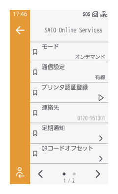
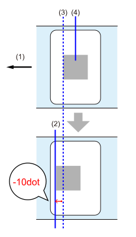
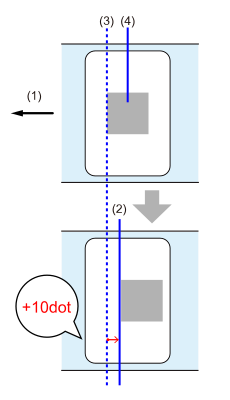
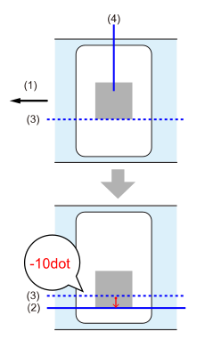
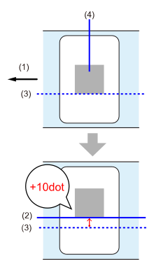

SOS（SATO Online Services）設定
［クラウドサービス］ > ［SATO Online Services］

SOS（SATO Online Services）機能を設定します。
SOSは、弊社のお客さまヘルプデスクがお客様のプリンタをクラウドから24時間365日見守り、プリンタの稼働状況からタイムリーな消耗部品の交換（“プロアクティブ・アクション”）をご案内します。さらに、万一の障害も原因を速やかに把握し、早期解決をお手伝いします。
SOSのご利用には、事前にSOSアカウントの作成と本製品の追加が必要です。
SOSに関する詳細情報は、SOS特設WEBサイトをご覧ください。
海外 https://www.sato-sos.com/en/
［モード］
SOSの接続方法を選択するか、SOS機能を無効にします。
- ［無効］
- ［オンデマンド］
以下のいずれかの方法で本製品の情報を取得して、SOSクラウドに送ります。- 本製品の画面に表示されるQRコードをスキャン
- NFC接続
- ［リアルタイム］
有線LANまたは無線LAN接続を使用して、本製品の情報をリアルタイムにSOSクラウドに送ります。 - ［かんたん接続］
有線LANまたは無線LAN接続を使用して、本製品の情報をリアルタイムにSOSクラウドに送ります。

- QRコードのスキャンやNFCによる読取りはSOS専用アプリが必要です。
- ［オンデマンド］または［かんたん接続］でSOSに接続した場合、SOS Webから本製品の稼働情報の確認がおこなえるようになります。（SOS Webから設定の変更はおこなえません。）
- ［リアルタイム］でSOSに接続した場合、SOS Webから本製品の稼働情報の確認に加え、設定の確認や変更もおこなえるようになります。
- 以降の設定項目は、［無効］以外を選択している場合にのみ表示されます。
初期値：
日本 ［オンデマンド］
海外 ［無効］
［通信設定］
SOSクラウドに接続する際の通信方法が表示されます。
- ［有線］
- ［Wi-Fi］
- ［モバイル通信］日本
［リモートコントロール］
SOSからの本製品の設定（リモートコントロール）を許可するかを設定します。
［モード］で［リアルタイム］を選択している場合にのみ表示されます。
- ［禁止］
SOSからのリモートコントロールを許可しません。 - ［再起動まで］
本製品を再起動するまで、SOSからのリモートコントロールを許可します。 - ［許可］
SOSからのリモートコントロールを常時許可します。
［MQTT通信方式］
MQTTの通信方式を設定します。
［モード］で［リアルタイム］を選択している場合にのみ表示されます。
- 日本 SOSの通信でSIM接続を使用する場合は、［MQTT］に設定することを推奨します。
初期値：［MQTT over WebSocket］
［プリンタ認証登録］
SOSに本製品を追加する際に必要となる、シリアルナンバーとアソシエーションコードが表示されます。
- SOSへの本製品の追加手順については、プリンタ準備マニュアルをご覧ください。
日本 https://www.sato-sos.com/support/#print_preparation_manual
海外 https://www.sato-sos.com/en/support/#print_preparation_manual
［連絡先］
エラー発生時に表示するSOSの連絡先が表示されます。
初期値： 日本 0120-951301
［定期通知］
［モード］で［オンデマンド］を選択している場合に、本製品の情報を表すQRコードの定期通知の頻度やタイミングを設定します。
［モード］で［オンデマンド］を選択している場合にのみ表示されます。
［定期通知］ > ［種類］
本製品の情報を表すQRコードの定期通知の頻度やタイミングを設定します。
- ［無効］
QRコードの定期通知を無効にします。 - ［毎日］
毎日、指定した回数、指定した時刻にQRコードが表示されます。 - ［毎週］
毎週、指定した曜日の指定した時刻にQRコードが表示されます。 - ［毎月］
毎月、指定した日付の指定した時刻にQRコードが表示されます。 - ［カウンタ］
消耗部品のカウンタが指定した値に達したときにQRコードが表示されます。 - ［オフライン］
本製品がオフライン状態に切替わったときにQRコードが表示されます。
［定期通知］ > ［通知回数］
1日にQRコードの定期通知をおこなう回数を指定します。
［種類］で［毎日］を選択している場合にのみ表示されます。
初期値： 1
［定期通知］ > ［時間設定 1］～［時間設定 3］
QRコードの定期通知をおこなう時刻を指定します。
［通知回数］で指定している回数分の設定をおこないます。
［種類］で［毎日］を選択している場合にのみ表示されます。
［定期通知］ > ［曜日］
QRコードの定期通知をおこなう曜日を指定します。
［通知設定］で［毎週］を選択している場合にのみ表示されます。
初期値： 月曜日
［定期通知］ > ［日］
QRコードの定期通知をおこなう日付を設定します。
［通知設定］で［毎月］を選択している場合にのみ表示されます。
初期値： 1
［定期通知］ > ［時間］
指定した曜日または日付の何時に定期通知をおこなうかを指定します。
［通知設定］で［毎週］または［毎月］を選択している場合にのみ表示されます。
［定期通知］ > ［カウンタ］
QRコードの定期通知時期の基準とする消耗部品を選択します。
［通知設定］で［カウンタ］を選択している場合にのみ表示されます。
- ［サーマルヘッド］
- ［カッタ］
- ［サーマルヘッド+カッタ］
［定期通知］ > ［カウンタ］ > ［サーマルヘッド］
QRコードの定期通知時期の基準となるサーマルヘッドの走行距離を設定します。
［通知設定］で［カウンタ］を［サーマルヘッド］または［サーマルヘッド+カッタ］に設定している場合にのみ表示されます。
- ［走行距離］
QRコードの定期通知時期の基準となるサーマルヘッドの走行距離を指定します。指定した走行距離ごとにQRコードの通知がおこなわれます。
初期値： 1,000（m） - ［前回の更新］
前回QRコードの定期通知がおこなわれたときの、サーマルヘッドの走行距離が表示されます。 - ［次回の更新］
次回QRコードの定期通知がおこなわれるときの、サーマルヘッドの走行距離が表示されます。
初期値：1,000（m） - ［現在の値］
現在のサーマルヘッドの走行距離が表示されます。
［定期通知］ > ［カウンタ］ > ［カッタ］
QRコードの定期通知時期の基準となるカッタのカット回数を設定します。
［通知設定］で［カウンタ］を［カッタ］または［サーマルヘッド+カッタ］に設定している場合にのみ表示されます。
- ［カット回数］
QRコードの定期通知時期の基準となるカッタのカット回数を指定します。
初期値： 10,000 - ［前回の更新］
前回QRコードの定期通知がおこなわれたときの、カッタのカット回数が表示されます。 - ［次回の更新］
次回QRコードの定期通知がおこなわれるときの、カッタのカット回数が表示されます。
初期値：0 - ［現在の値］
現在のカッタのカット回数が表示されます。
［QRコードオフセット］
SOSの定期通知で表示されるQRコードの印字位置を補正します。
［モード］で［オンデマンド］を選択している場合にのみ表示されます。
［QRコードオフセット］ > ［縦位置補正］
QRコードの縦位置を補正します。
用紙送り方向に補正したい場合はマイナス値（下図のAを参照）を、用紙送り方向に対して下方向に補正したい場合はプラス値（下図のBを参照）を設定します。
-792～0～792dot
| A | B |
|---|---|
|  |  |
- 用紙送り方向
- 調整後のQRコードの縦位置
- 調整前のQRコードの縦位置
- QRコード
［QRコードオフセット］ > ［横位置補正］
QRコードの横位置を補正します。
用紙送り方向に対して左方向に補正したい場合はマイナス値（下図のAを参照）を、用紙送り方向に対して右方向に補正したい場合はプラス値（下図のBを参照）を設定します。
-792～0～792dot
| A | B |
|---|---|
|  |  |
- 用紙送り方向
- 調整後のQRコードの横位置
- 調整前のQRコードの横位置
- QRコード
［Daily Checkup］
現在の本製品の情報をQRコードで表示されます。タブレット端末やスマートフォンでQRコードをスキャンし、SOSクラウドに送ります。
［モード］で［オンデマンド］を選択している場合にのみ表示されます。
- QRコードをスキャンする代わりにNFC接続を使って製品情報を取得し、SOSクラウドに送ることもできます。
- QRコードのスキャンやNFCによる読取りはSOS専用アプリが必要です。
- QRコードを印字するには、◆iln_printqrをタップしてください。
QRコードを印字するには、長さ33mm以上、幅33mm以上（台紙含まず）の用紙を用意してください。
［SOSエージェント復元］
SOSエージェントを工場出荷状態に戻します。
［サプライプロファイル］
▲仕様不明
［バージョン］
SOSエージェントのバージョンが表示されます。